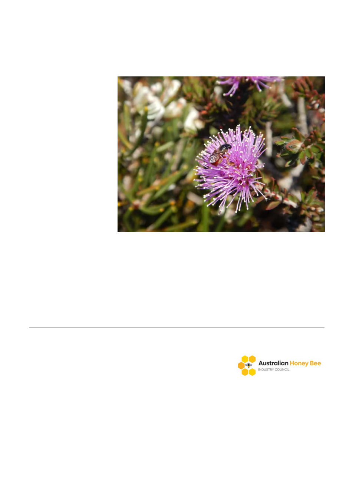

Australia has about 2,000 species of native bees. Carmen da Silva
However, when the microclimates species are exposed to in their nests were considered, stem
nesters were shown to be the most vulnerable. This is because they are unable to hide from
extreme temperatures, like ground nesters.
We also found a general trend showing that species vulnerability to climate change increases
towards tropical latitudes. This means tropical bees that nest above ground are the most vulnerable
to climate change.
Working to
conserve bees
Tropical Queensland still
has one of the fastest land
clearing rates on Earth.
To conserve our crucial
pollinators of native plants
and agricultural crops, we
need to stop further land
clearing of tropical forests,
which provide cooler
microclimates in an
otherwise very warm
environment.
As well as conserving
native vegetation, Australia
needs to slow its
greenhouse gas emissions
so we can secure pollination (of both native and agricultural plants) and food security into the future.
Carmen da Silva, Macquarie University Research Fellow, Macquarie University; Rosalyn Gloag,
School of Life and Environmental Sciences Research Fellow, University of Sydney, and Vanessa
Kellermann, Senior Lecturer, Ecological Plant and Animal Sciences Melbourne, La Trobe University
This article is republished from The Conversation under a Creative Commons license. Read the
AHBIC
AHBIC Industry Update
We encourage all beekeepers to view the publications on AHBIC's
website. https://honeybee.org.au/biosecurity/
Resistant Mite Spread Map
The spread of resistant mites across the eastern seaboard has been traced and confirmed through
the joint effort of affected beekeepers and state governments, along with comprehensive laboratory
testing. As feared, the spread of both pyrethroid and amitraz resistant varroa mites are now clearly
affecting the eastern mainland states.
The map below (click to enlarge), courtesy of QLD DPI, dated 4 June 2026, clearly shows confirmed
resistant properties in blue, spread from Queensland, through NSW, Victoria and South Australia.